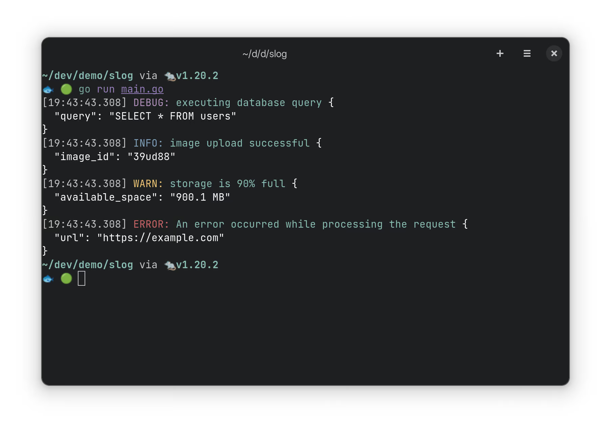
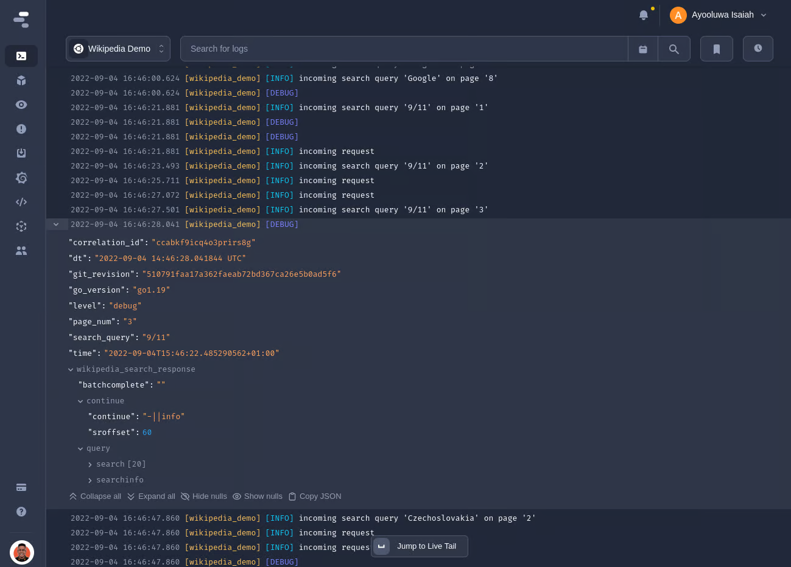

目录 [−]
原文: Logging in Go with Slog: The Ultimate Guide by Ayooluwa Isaiah.
在本文中，我们将探讨 Go 中的结构化日志记录，并特别关注这最近推出的 log/slog 软件包, 这个软件包旨在为 Go 带来高性能、结构化和分级的日志记录标准库。
该软件包起源于由 Jonathan Amsterdam 发起的 GitHub 讨论, 后来专门建立了一个提案细化设计。一旦定稿，它在Go v1.21版本中发布。
在以下各节中，我将全面呈现slog的功能， 提供相应的例子。至于它和其它日志框架的性能比较，请参阅此 GitHub 日志框架 benchmark.
开始使用 Slog
让我们从探讨该包的设计和架构开始。它提供了三种您应该熟悉的主要类型:log/slog
- Logger：日志"前端"，提供了诸如
Info() 和 Error() 等级别方法来记录感兴趣的事件。
- Record：由
Logger 创建的每个独立日志对象的表示形式。
- Handler：一旦实现了这个接口，就可以决定每个
Record 的格式化和目的地。该包中包含两个内置处理程序：TextHandler 用于 key=value 输出，JSONHandler 用于 JSON 输出。
与大多数 Go 日志库一样， slog包公开了一个可通过包级别函数访问的默认 Logger。该 logger 产生的输出与旧的 log.Printf() 方法几乎相同，只是多了日志级别。
1 2 3 4 5 6 7 8 9 10 11
| package main import ( "log" "log/slog" ) func main() { log.Print("Info message") slog.Info("Info message") }
|
output1 2
| 2024/01/03 10:24:22 Info message 2024/01/03 10:24:22 INFO Info message
|
这是一个有些奇怪的默认设置,因为 slog 的主要目的是为标准库带来结构化日志记录。
不过,通过 slog.New() 方法创建自定义实例就很容易纠正这一点。它接受一个 Handler 接口的实现,用于决定日志的格式化方式和写入位置。
下面是一个使用内置的 JSONHandler 类型将 JSON 日志输出到 stdout 的示例:
1 2 3 4 5 6 7
| func main() { logger := slog.New(slog.NewJSONHandler(os.Stdout, nil)) logger.Debug("Debug message") logger.Info("Info message") logger.Warn("Warning message") logger.Error("Error message") }
|
output1 2 3
| {"time":"2023-03-15T12:59:22.227408691+01:00","level":"INFO","msg":"Info message"} {"time":"2023-03-15T12:59:22.227468972+01:00","level":"WARN","msg":"Warning message"} {"time":"2023-03-15T12:59:22.227472149+01:00","level":"ERROR","msg":"Error message"}
|
当使用 TextHandler 类型时,每个日志记录将根据 Logfmt 标准进行格式化:
1
| logger := slog.New(slog.NewTextHandler(os.Stdout, nil))
|
output1 2 3
| time=2023-03-15T13:00:11.333+01:00 level=INFO msg="Info message" time=2023-03-15T13:00:11.333+01:00 level=WARN msg="Warning message" time=2023-03-15T13:00:11.333+01:00 level=ERROR msg="Error message"
|
所有Logger实例默认使用 INFO 级别进行日志记录,这将导致 DEBUG 条目被一直不输出,但您可以根据需要轻松更新日志级别。
自定义默认 logger
自定义默认 logger 最直接的方式是利用 slog.SetDefault() 方法,允许您用自定义的 logger 替换默认的 logger:
1 2 3 4 5 6 7
| func main() { logger := slog.New(slog.NewJSONHandler(os.Stdout, nil)) slog.SetDefault(logger) slog.Info("Info message") }
|
你现在会观察到,该包的顶层日志记录方法现在会生成如下所示的 JSON 输出:
output1
| {"time":"2023-03-15T13:07:39.105777557+01:00","level":"INFO","msg":"Info message"}
|
使用 SetDefault() 方法还会改变 log 包使用的默认 log.Logger。这种行为允许利用旧的 log 包的现有应用程序无缝过渡到结构化日志记录。
1 2 3 4 5 6 7 8
| func main() { logger := slog.New(slog.NewJSONHandler(os.Stdout, nil)) slog.SetDefault(logger) log.Println("Hello from old logger") }
|
output1
| {"time":"2023-03-16T15:20:33.783681176+01:00","level":"INFO","msg":"Hello from old logger"}
|
当您需要利用需要 log.Logger 的 API 时(如 http.Server.ErrorLog)，slog.NewLogLogger() 方法也可用于将slog.Logger 转换为 log.Logger：
1 2 3 4 5 6 7 8 9 10
| func main() { handler := slog.NewJSONHandler(os.Stdout, nil) logger := slog.NewLogLogger(handler, slog.LevelError) _ = http.Server{ ErrorLog: logger, } }
|
为日志记录添加上下文属性
结构化日志记录相对于非结构化格式的一个重大优势是能够在日志记录中以键/值对的形式添加任意属性。
这些属性为所记录的事件提供了额外的上下文信息,对于诸如故障排除、生成指标、审计和各种其他用途等任务非常有价值。
下面是一个示例,说明了如何在 slog 中实现这一点:
1 2 3 4 5 6 7 8
| logger.Info( "incoming request", "method", "GET", "time_taken_ms", 158, "path", "/hello/world?q=search", "status", 200, "user_agent", "Googlebot/2.1 (+http://www.google.com/bot.html)", )
|
output1 2 3 4 5 6 7 8 9 10
| { "time":"2023-02-24T11:52:49.554074496+01:00", "level":"INFO", "msg":"incoming request", "method":"GET", "time_taken_ms":158, "path":"/hello/world?q=search", "status":200, "user_agent":"Googlebot/2.1 (+http://www.google.com/bot.html)" }
|
所有的级别方法(Info()、Debug()等)都接受一个日志消息作为第一个参数,之后可以接受无限个宽松类型的键/值对。
这个 API 类似于 Zap 中的 SugaredLogger API(具体是以w结尾的级别方法),它以额外的内存分配为代价来换取简洁性。
但要小心,因为这种方法可能会导致意外的问题。具体来说,不匹配的键/值对会导致输出存在问题:
1 2 3 4 5
| logger.Info( "incoming request", "method", "GET", "time_taken_ms", )
|
由于time_taken_ms键没有对应的值,它将被视为以!BADKEY作为键的值。这不太理想,因为属性对齐错误可能会创建错误的条目,而您可能要等到需要使用日志时才会发现。
output1 2 3 4 5 6 7
| { "time": "2023-03-15T13:15:29.956566795+01:00", "level": "INFO", "msg": "incoming request", "method": "GET", "!BADKEY": "time_taken_ms" }
|
为了防止此类问题,您可以运行vet命令或使用lint工具自动报告此类问题：
1 2 3 4
| $ go vet ./... ./main.go:6:2: call to slog.Info missing a final value
|
另一种防止此类错误的方法是使用如下所示的强类型上下文属性:
1 2 3 4 5 6 7 8 9 10 11
| logger.Info( "incoming request", slog.String("method", "GET"), slog.Int("time_taken_ms", 158), slog.String("path", "/hello/world?q=search"), slog.Int("status", 200), slog.String( "user_agent", "Googlebot/2.1 (+http://www.google.com/bot.html)", ), )
|
虽然这是上下文日志记录的一种更好的方法,但它并不是万无一失的,因为没有什么能阻止您混合使用强类型和宽松类型的键/值对,就像这样:
1 2 3 4 5 6 7 8 9 10 11
| logger.Info( "incoming request", "method", "GET", slog.Int("time_taken_ms", 158), slog.String("path", "/hello/world?q=search"), "status", 200, slog.String( "user_agent", "Googlebot/2.1 (+http://www.google.com/bot.html)", ), )
|
要在为记录添加上下文属性时保证类型安全,您必须使用 LogAttrs() 方法,像这样:
1 2 3 4 5 6 7 8 9 10 11 12 13
| logger.LogAttrs( context.Background(), slog.LevelInfo, "incoming request", slog.String("method", "GET"), slog.Int("time_taken_ms", 158), slog.String("path", "/hello/world?q=search"), slog.Int("status", 200), slog.String( "user_agent", "Googlebot/2.1 (+http://www.google.com/bot.html)", ), )
|
这个方法只接受 slog.Attr 类型的自定义属性,因此不可能出现不平衡的键/值对。然而,它的 API 更加复杂,因为除了日志消息和自定义属性外,您总是需要向该方法传递上下文(或 nil)和日志级别。
分组上下文属性
Slog 还允许在单个名称下对多个属性进行分组,但输出取决于所使用的 Handler。例如,对于 JSONHandler,每个组都嵌套在 JSON 对象中:
1 2 3 4 5 6 7 8 9 10 11
| logger.LogAttrs( context.Background(), slog.LevelInfo, "image uploaded", slog.Int("id", 23123), slog.Group("properties", slog.Int("width", 4000), slog.Int("height", 3000), slog.String("format", "jpeg"), ), )
|
output1 2 3 4 5 6 7 8 9 10 11
| { "time":"2023-02-24T12:03:12.175582603+01:00", "level":"INFO", "msg":"image uploaded", "id":23123, "properties":{ "width":4000, "height":3000, "format":"jpeg" } }
|
当使用 TextHandler 时,组中的每个键都将以组名作为前缀,如下所示:
output1 2
| time=2023-02-24T12:06:20.249+01:00 level=INFO msg="image uploaded" id=23123 properties.width=4000 properties.height=3000 properties.format=jpeg
|
创建和使用子 logger
在特定范围内的所有记录中包含相同的属性,可以确保它们的存在而无需重复的日志记录语句,这是很有益的。
这就是子 logger 可以派上用场的地方,它创建了一个新的日志记录上下文,该上下文从其父级继承而来,同时允许包含额外的字段。
在 slog 中,创建子 logger 是使用 Logger.With() 方法完成的。它接受一个或多个键/值对,并返回一个包含指定属性的新 Logger。
考虑以下代码片段,它将程序的进程 ID 和用于编译的 Go 版本添加到每个日志记录中,并将它们存储在 program_info 属性中:
1 2 3 4 5 6 7 8 9 10 11 12 13 14 15
| func main() { handler := slog.NewJSONHandler(os.Stdout, nil) buildInfo, _ := debug.ReadBuildInfo() logger := slog.New(handler) child := logger.With( slog.Group("program_info", slog.Int("pid", os.Getpid()), slog.String("go_version", buildInfo.GoVersion), ), ) . . . }
|
有了这个配置，所有由子日志记录器创建的记录都会包含 program_info 属性下指定的属性，只要它在日志点没有被覆盖。
1 2 3 4 5 6 7 8 9
| func main() { . . . child.Info("image upload successful", slog.String("image_id", "39ud88")) child.Warn( "storage is 90% full", slog.String("available_space", "900.1 mb"), ) }
|
output1 2 3 4 5 6 7 8 9 10 11 12 13 14 15 16 17 18 19 20
| { "time": "2023-02-26T19:26:46.046793623+01:00", "level": "INFO", "msg": "image upload successful", "program_info": { "pid": 229108, "go_version": "go1.20" }, "image_id": "39ud88" } { "time": "2023-02-26T19:26:46.046847902+01:00", "level": "WARN", "msg": "storage is 90% full", "program_info": { "pid": 229108, "go_version": "go1.20" }, "available_space": "900.1 MB" }
|
您还可以使用 WithGroup() 方法创建一个子日志记录器，该方法会启动一个组，以便添加到日志记录器中的所有属性（包括在日志点添加的属性）都嵌套在组名下:
1 2 3 4 5 6 7 8 9 10 11 12 13
| handler := slog.NewJSONHandler(os.Stdout, nil) buildInfo, _ := debug.ReadBuildInfo() logger := slog.New(handler).WithGroup("program_info") child := logger.With( slog.Int("pid", os.Getpid()), slog.String("go_version", buildInfo.GoVersion), ) child.Warn( "storage is 90% full", slog.String("available_space", "900.1 MB"), )
|
output1 2 3 4 5 6 7 8 9 10
| { "time": "2023-05-24T19:00:18.384136084+01:00", "level": "WARN", "msg": "storage is 90% full", "program_info": { "pid": 1971993, "go_version": "go1.20.2", "available_space": "900.1 mb" } }
|
自定义 slog 日志级别
log/slog 软件包默认提供四个日志级别，每个级别都与一个整数值相关联：
- DEBUG (-4)
- INFO (0)
- WARN (4)
- ERROR (8)
每个级别之间间隔 4 是经过深思熟虑的设计决策，目的是为了适应在默认级别之间使用自定义级别的日志记录方案。例如，您可以使用 1、2 或 3 的值创建介于 INFO 和 WARN 之间的新日志级别。
我们之前看到过，默认情况下所有日志记录器都配置为 INFO 级别记录日志，这会导致低于该严重性（例如 DEBUG）的事件被忽略。您可以通过以下所示的 HandlerOptions 类型来自定义此行为：
1 2 3 4 5 6 7 8 9 10 11 12 13
| func main() { opts := &slog.HandlerOptions{ Level: slog.LevelDebug, } handler := slog.NewJSONHandler(os.Stdout, opts) logger := slog.New(handler) logger.Debug("Debug message") logger.Info("Info message") logger.Warn("Warning message") logger.Error("Error message") }
|
output1 2 3 4
| {"time":"2023-05-24T19:03:10.70311982+01:00","level":"DEBUG","msg":"Debug message"} {"time":"2023-05-24T19:03:10.703187713+01:00","level":"INFO","msg":"Info message"} {"time":"2023-05-24T19:03:10.703190419+01:00","level":"WARN","msg":"Warning message"} {"time":"2023-05-24T19:03:10.703192892+01:00","level":"ERROR","msg":"Error message"}
|
这种设置日志级别的方法会固定处理程序在整个生命周期内的日志级别。如果您需要动态调整最低日志级别，则必须使用 LevelVar 类型，如下所示：
1 2 3 4 5 6 7 8 9 10 11
| func main() { logLevel := &slog.LevelVar{} opts := &slog.HandlerOptions{ Level: logLevel, } handler := slog.NewJSONHandler(os.Stdout, opts) ... }
|
之后您可以随时使用以下方式更新日志级别：
1
| logLevel.Set(slog.LevelDebug)
|
创建自定义日志级别
如果您需要超出 slog 默认提供的日志级别，可以通过实现 Leveler 接口来创建它们。该接口的签名如下：
1 2 3
| type Leveler interface { Level() Level }
|
实现这个接口很简单，可以使用下面展示的 Level 类型（因为 Level 本身就实现了 Leveler 接口）：
1 2 3 4
| const ( LevelTrace = slog.Level(-8) LevelFatal = slog.Level(12) )
|
一旦您像上面那样定义了自定义日志级别，您就只能通过 Log() 或 LogAttrs() 方法来使用它们：
1 2 3 4 5 6 7 8 9
| opts := &slog.HandlerOptions{ Level: LevelTrace, } logger := slog.New(slog.NewJSONHandler(os.Stdout, opts)) ctx := context.Background() logger.Log(ctx, LevelTrace, "Trace message") logger.Log(ctx, LevelFatal, "Fatal level")
|
output1 2
| {"time":"2023-02-24T09:26:41.666493901+01:00","level":"DEBUG-4","msg":"Trace level"} {"time":"2023-02-24T09:26:41.666602404+01:00","level":"ERROR+4","msg":"Fatal level"}
|
注意到自定义日志级别会使用默认级别的名称进行标注。这显然不是您想要的，因此应该通过 HandlerOptions 类型来自定义级别名称，如下所示：
1 2 3 4 5 6 7 8 9 10 11 12 13 14 15 16 17 18 19 20 21 22 23 24 25 26 27
| ... var LevelNames = map[slog.Leveler]string{ LevelTrace: "TRACE", LevelFatal: "FATAL", } func main() { opts := slog.HandlerOptions{ Level: LevelTrace, ReplaceAttr: func(groups []string, a slog.Attr) slog.Attr { if a.Key == slog.LevelKey { level := a.Value.Any().(slog.Level) levelLabel, exists := LevelNames[level] if !exists { levelLabel = level.String() } a.Value = slog.StringValue(levelLabel) } return a }, } ... }
|
ReplaceAttr() 函数用于自定义 Handler 如何处理 Record 中的每个键值对。它可以用来修改键名，或者以某种方式处理值。
在给定的示例中，它将自定义日志级别映射到它们各自的标签，分别生成 TRACE 和 FATAL:
output1 2
| {"time":"2023-02-24T09:27:51.747625912+01:00","level":"TRACE","msg":"Trace level"} {"time":"2023-02-24T09:27:51.747737319+01:00","level":"FATAL","msg":"Fatal level"}
|
自定义 slog 处理程序
正如之前提到的，TextHandler 和 JSONHandler 都可以使用 HandlerOptions 类型进行定制。您已经看过如何调整最低日志级别以及在记录日志之前修改属性。
通过 HandlerOptions 还可实现的其他自定义功能包括（如果需要的话）：
1 2 3 4
| opts := &slog.HandlerOptions{ AddSource: true, Level: slog.LevelDebug, }
|
1 2 3 4 5 6 7 8 9 10
| { "time": "2024-01-03T11:06:50.971029852+01:00", "level": "DEBUG", "source": { "function": "main.main", "file": "/home/ayo/dev/betterstack/demo/slog/main.go", "line": 17 }, "msg": "Debug message" }
|
根据应用环境切换日志处理程序也非常简单。例如，您可能更喜欢在开发过程中使用 TextHandler，因为它更易于阅读，然后在生产环境中切换到 JSONHandler 以获得更大的灵活性并兼容各种日志工具。
这种行为可以通过环境变量轻松实现：
1 2 3 4 5 6 7 8 9 10 11 12 13 14 15 16
| var appEnv = os.Getenv("APP_ENV") func main() { opts := &slog.HandlerOptions{ Level: slog.LevelDebug, } var handler slog.Handler = slog.NewTextHandler(os.Stdout, opts) if appEnv == "production" { handler = slog.NewJSONHandler(os.Stdout, opts) } logger := slog.New(handler) logger.Info("Info message") }
|
output1
| time=2023-02-24T10:36:39.697+01:00 level=INFO msg="Info message"
|
1
| $APP_ENV=production go run main.go
|
output1
| {"time":"2023-02-24T10:35:16.964821548+01:00","level":"INFO","msg":"Info message"}
|
创建自定义日志处理程序
由于 Handler 是一个接口，因此可以创建自定义处理程序来以不同的格式格式化日志或将它们写入其他目的地。
该接口的签名如下：
1 2 3 4 5 6
| type Handler interface { Enabled(context.Context, Level) bool Handle(context.Context, r Record) error WithAttrs(attrs []Attr) Handler WithGroup(name string) Handler }
|
以下是每个方法的解释：
- Enabled：判断日志记录是否应该被处理或丢弃，依据是日志记录的级别。上下文信息也可以用于决策。
- Handle：处理发送到该处理程序的每个日志记录 (record)。仅当 Enabled 返回 true 时才会调用此方法。
- WithAttrs：使用现有处理程序创建一个新处理程序，并向其中添加指定的属性 (attrs)。
- WithGroup：使用现有处理程序创建一个新处理程序，并向其中添加指定的组名 (group)，该名称限定后续的属性。
- 这是一个使用 log、json 和 color 软件包来实现美化开发环境日志输出的示例：
1 2 3 4 5 6 7 8 9 10 11 12 13 14 15 16 17 18 19 20 21 22 23 24 25 26 27 28 29 30 31 32 33 34 35 36 37 38 39 40 41 42 43 44 45 46 47 48 49 50 51 52 53 54 55 56 57 58 59 60 61 62 63 64 65 66 67
| package main import ( "context" "encoding/json" "io" "log" "log/slog" "github.com/fatih/color" ) type PrettyHandlerOptions struct { SlogOpts slog.HandlerOptions } type PrettyHandler struct { slog.Handler l *log.Logger } func (h *PrettyHandler) Handle(ctx context.Context, r slog.Record) error { level := r.Level.String() + ":" switch r.Level { case slog.LevelDebug: level = color.MagentaString(level) case slog.LevelInfo: level = color.BlueString(level) case slog.LevelWarn: level = color.YellowString(level) case slog.LevelError: level = color.RedString(level) } fields := make(map[string]interface{}, r.NumAttrs()) r.Attrs(func(a slog.Attr) bool { fields[a.Key] = a.Value.Any() return true }) b, err := json.MarshalIndent(fields, "", " ") if err != nil { return err } timeStr := r.Time.Format("[15:05:05.000]") msg := color.CyanString(r.Message) h.l.Println(timeStr, level, msg, color.WhiteString(string(b))) return nil } func NewPrettyHandler( out io.Writer, opts PrettyHandlerOptions, ) *PrettyHandler { h := &PrettyHandler{ Handler: slog.NewJSONHandler(out, &opts.SlogOpts), l: log.New(out, "", 0), } return h }
|
你的代码使用PrettyHandler的方式如下：
1 2 3 4 5 6 7 8 9 10 11 12 13 14 15 16 17 18 19 20 21 22
| func main() { opts := PrettyHandlerOptions{ SlogOpts: slog.HandlerOptions{ Level: slog.LevelDebug, }, } handler := NewPrettyHandler(os.Stdout, opts) logger := slog.New(handler) logger.Debug( "executing database query", slog.String("query", "SELECT * FROM users"), ) logger.Info("image upload successful", slog.String("image_id", "39ud88")) logger.Warn( "storage is 90% full", slog.String("available_space", "900.1 MB"), ) logger.Error( "An error occurred while processing the request", slog.String("url", "https://example.com"), ) }
|
当你执行程序时你会看到如下彩色的输出：

你可以在 GitHub 和这篇 Go Wiki 页面上找到社区创建的几个自定义处理程序。 一些值得关注的例子包括：
使用 context 包
到目前为止，我们主要使用的是诸如 Info() 和 Debug() 等标准级别的函数，但 slog 还提供了支持 context 的变体，这些变体将 context.Context 值作为第一个参数。下面是每个函数的签名：
1
| func (ctx context.Context, msg string, args ...any)
|
使用这些方法，您可以通过将上下文属性存储在 Context 中来跨函数传播它们，这样当找到这些值时，它们就会被添加到任何生成的日志记录中。
请考虑以下程序：
1 2 3 4 5 6 7 8 9 10 11 12 13 14 15
| package main import ( "context" "log/slog" "os" ) func main() { logger := slog.New(slog.NewJSONHandler(os.Stdout, nil)) ctx := context.WithValue(context.Background(), "request_id", "req-123") logger.InfoContext(ctx, "image uploaded", slog.String("image_id", "img-998")) }
|
在代码中，我们向 ctx 变量添加了一个 request_id 并传递给了 InfoContext 方法。然而，运行程序后，日志中却没有出现 request_id 字段。
output1 2 3 4 5 6
| { "time": "2024-01-02T11:04:28.590527494+01:00", "level": "INFO", "msg": "image uploaded", "image_id": "img-998" }
|
为了实现这一功能，你需要创建一个自定义处理程序并重新实现 Handle 方法，如下所示：
1 2 3 4 5 6 7 8 9 10 11 12 13 14 15 16 17 18 19 20 21 22 23 24 25 26 27 28 29 30 31 32 33 34 35 36 37 38
| type ctxKey string const ( slogFields ctxKey = "slog_fields" ) type ContextHandler struct { slog.Handler } func (h ContextHandler) Handle(ctx context.Context, r slog.Record) error { if attrs, ok := ctx.Value(slogFields).([]slog.Attr); ok { for _, v := range attrs { r.AddAttrs(v) } } return h.Handler.Handle(ctx, r) } func AppendCtx(parent context.Context, attr slog.Attr) context.Context { if parent == nil { parent = context.Background() } if v, ok := parent.Value(slogFields).([]slog.Attr); ok { v = append(v, attr) return context.WithValue(parent, slogFields, v) } v := []slog.Attr{} v = append(v, attr) return context.WithValue(parent, slogFields, v) }
|
ContextHandler 结构体嵌入了 slog.Handler 接口，并实现了 Handle 方法。该方法的作用是提取提供者上下文 (context) 中存储的 Slog 属性。如果找到这些属性，它们将被添加到日志记录 (Record) 中。 然后，底层的处理程序 (Handler) 会被调用，负责格式化并输出这条日志记录。
另一方面，AppendCtx 函数用于向 context.Context 中添加 Slog 属性。它使用 slogFields 这个键作为标识符，使得 ContextHandler 能够访问这些属性。
下面将介绍如何同时使用这两个部分来让 request_id 信息出现在日志中：
1 2 3 4 5 6 7 8 9
| func main() { h := &ContextHandler{slog.NewJSONHandler(os.Stdout, nil)} logger := slog.New(h) ctx := AppendCtx(context.Background(), slog.String("request_id", "req-123")) logger.InfoContext(ctx, "image uploaded", slog.String("image_id", "img-998")) }
|
现在您将观察到，使用 ctx 参数创建的任何日志记录中都包含了 request_id 信息。
output1 2 3 4 5 6 7
| { "time": "2024-01-02T11:29:15.229984723+01:00", "level": "INFO", "msg": "image uploaded", "image_id": "img-998", "request_id": "req-123" }
|
slog 错误日志记录
与大多数框架不同，slog 没有为 error 类型提供特定的日志记录助手函数。因此，您需要像这样使用 slog.Any() 记录错误：
1 2 3
| err := errors.New("something happened") logger.ErrorContext(ctx, "upload failed", slog.Any("error", err))
|
output1 2 3 4 5 6
| { "time": "2024-01-02T14:13:44.41886393+01:00", "level": "ERROR", "msg": "upload failed", "error": "something happened" }
|
为了获取并记录错误的堆栈跟踪信息，您可以使用诸如 xerrors 之类的库来创建带有堆栈跟踪的错误对象：
1 2 3
| err := xerrors.New("something happened") logger.ErrorContext(ctx, "upload failed", slog.Any("error", err))
|
为了在错误日志中看到堆栈跟踪信息，您还需要像之前提到的 ReplaceAttr() 函数一样，提取、格式化并将其添加到对应的 Record 中。
下面是一个例子：
1 2 3 4 5 6 7 8 9 10 11 12 13 14 15 16 17 18 19 20 21 22 23 24 25 26 27 28 29 30 31 32 33 34 35 36 37 38 39 40 41 42 43 44 45 46 47 48 49 50 51 52 53 54 55 56 57 58 59 60 61 62 63 64 65 66 67 68 69 70 71 72 73 74 75 76 77 78 79 80 81 82 83 84 85 86 87 88 89
| package main import ( "context" "log/slog" "os" "path/filepath" "github.com/mdobak/go-xerrors" ) type stackFrame struct { Func string `json:"func"` Source string `json:"source"` Line int `json:"line"` } func replaceAttr(_ []string, a slog.Attr) slog.Attr { switch a.Value.Kind() { case slog.KindAny: switch v := a.Value.Any().(type) { case error: a.Value = fmtErr(v) } } return a } func marshalStack(err error) []stackFrame { trace := xerrors.StackTrace(err) if len(trace) == 0 { return nil } frames := trace.Frames() s := make([]stackFrame, len(frames)) for i, v := range frames { f := stackFrame{ Source: filepath.Join( filepath.Base(filepath.Dir(v.File)), filepath.Base(v.File), ), Func: filepath.Base(v.Function), Line: v.Line, } s[i] = f } return s } func fmtErr(err error) slog.Value { var groupValues []slog.Attr groupValues = append(groupValues, slog.String("msg", err.Error())) frames := marshalStack(err) if frames != nil { groupValues = append(groupValues, slog.Any("trace", frames), ) } return slog.GroupValue(groupValues...) } func main() { h := slog.NewJSONHandler(os.Stdout, &slog.HandlerOptions{ ReplaceAttr: replaceAttr, }) logger := slog.New(h) ctx := context.Background() err := xerrors.New("something happened") logger.ErrorContext(ctx, "image uploaded", slog.Any("error", err)) }
|
结合以上步骤，任何使用 xerrors.New() 创建的错误都将以如下格式记录，其中包含格式良好的堆栈跟踪信息：
output1 2 3 4 5 6 7 8 9 10 11 12 13 14 15 16 17 18 19 20 21 22 23 24 25
| { "time": "2024-01-03T07:09:31.013954119+01:00", "level": "ERROR", "msg": "image uploaded", "error": { "msg": "something happened", "trace": [ { "func": "main.main", "source": "slog/main.go", "line": 82 }, { "func": "runtime.main", "source": "runtime/proc.go", "line": 267 }, { "func": "runtime.goexit", "source": "runtime/asm_amd64.s", "line": 1650 } ] } }
|
现在您可以轻松跟踪应用程序中任何意外错误的执行路径。
使用 LogValuer 接口隐藏敏感字段
LogValuer 接口允许您通过指定自定义类型的日志输出方式来标准化日志记录。以下是该接口的签名：
1 2 3
| type LogValuer interface { LogValue() Value }
|
实现了该接口的主要用途之一是在自定义类型中隐藏敏感字段。例如，这里有一个 User 类型，它没有实现 LogValuer 接口。请注意，当实例被记录时，敏感细节是如何暴露出来的：
1 2 3 4 5 6 7 8 9 10 11 12 13 14 15 16 17 18 19 20 21 22 23
| type User struct { ID string `json:"id"` FirstName string `json:"first_name"` LastName string `json:"last_name"` Email string `json:"email"` Password string `json:"password"` } func main() { handler := slog.NewJSONHandler(os.Stdout, nil) logger := slog.New(handler) u := &User{ ID: "user-12234", FirstName: "Jan", LastName: "Doe", Email: "jan@example.com", Password: "pass-12334", } logger.Info("info", "user", u) }
|
output1 2 3 4 5 6 7 8 9 10 11 12
| { "time": "2023-02-26T22:11:30.080656774+01:00", "level": "INFO", "msg": "info", "user": { "id": "user-12234", "first_name": "Jan", "last_name": "Doe", "email": "jan@example.com", "password": "pass-12334" } }
|
由于该类型包含不应该出现在日志中的秘密字段（例如电子邮件和密码），这会带来问题，并且也可能使您的日志变得冗长。
您可以通过指定类型在日志中的表示方式来解决这个问题。例如，您可以仅指定记录 ID 字段，如下所示：
1 2 3 4
| func (u User) LogValue() slog.Value { return slog.StringValue(u.ID) }
|
You will now observe the following output:
output1 2 3 4 5 6
| { "time": "2023-02-26T22:43:28.184363059+01:00", "level": "INFO", "msg": "info", "user": "user-12234" }
|
除了隐藏敏感字段，您还可以像这样对多个属性进行分组：
1 2 3 4 5 6
| func (u User) LogValue() slog.Value { return slog.GroupValue( slog.String("id", u.ID), slog.String("name", u.FirstName+" "+u.LastName), ) }
|
output1 2 3 4 5 6 7 8 9
| { "time": "2023-03-15T14:44:24.223381036+01:00", "level": "INFO", "msg": "info", "user": { "id": "user-12234", "name": "Jan Doe" } }
|
使用第三方日志后端与 Slog 集成
slog 设计的主要目标之一是在 Go 应用程序中提供统一的日志记录前端（slog.Logger），同时后端（slog.Handler）可以根据程序进行定制。
这样一来，即使后端不同，所有依赖项使用的日志记录 API 都是一致的。 同时，通过使切换不同的后端变得简单，避免了将日志记录实现与特定包耦合在一起。
以下示例展示了将 Slog 前端与 Zap 后端结合使用，可以实现两者的优势：
1 2
| $ go get go.uber.org/zap $ go get go.uber.org/zap/exp/zapslog
|
1 2 3 4 5 6 7 8 9 10 11 12 13 14 15 16 17 18 19 20 21 22 23
| package main import ( "log/slog" "go.uber.org/zap" "go.uber.org/zap/exp/zapslog" ) func main() { zapL := zap.Must(zap.NewProduction()) defer zapL.Sync() logger := slog.New(zapslog.NewHandler(zapL.Core(), nil)) logger.Info( "incoming request", slog.String("method", "GET"), slog.String("path", "/api/user"), slog.Int("status", 200), ) }
|
该代码片段创建了一个新的 Zap 生产环境日志记录器，然后通过 zapslog.NewHandler() 将其用作 Slog 包的处理程序。配置完成后，您只需使用 slog.Logger 提供的方法写入日志，生成的日志记录将根据提供的 zapL 配置进行处理。
output1
| {"level":"info","ts":1697453912.4535635,"msg":"incoming request","method":"GET","path":"/api/user","status":200}
|
由于日志记录是通过 slog.Logger 来完成的，因此切换到不同的日志记录器真的非常简单。例如，你可以像这样从 Zap 切换到 Zerolog：
1 2
| $ go get github.com/rs/zerolog $ go get github.com/samber/slog-zerolog
|
1 2 3 4 5 6 7 8 9 10 11 12 13 14 15 16 17 18 19 20 21 22 23 24
| package main import ( "log/slog" "os" "github.com/rs/zerolog" slogzerolog "github.com/samber/slog-zerolog" ) func main() { zerologL := zerolog.New(os.Stdout).Level(zerolog.InfoLevel) logger := slog.New( slogzerolog.Option{Logger: &zerologL}.NewZerologHandler(), ) logger.Info( "incoming request", slog.String("method", "GET"), slog.String("path", "/api/user"), slog.Int("status", 200), ) }
|
output1
| {"level":"info","time":"2023-10-16T13:22:33+02:00","method":"GET","path":"/api/user","status":200,"message":"incoming request"}
|
在上面的代码片段中，Zap 处理器已被自定义的 Zerolog 处理器替换。由于日志记录不是使用任何库的自定义 API 完成的，因此迁移过程只需几分钟，相比之下，如果你需要在整个应用程序中从一个日志记录 API 切换到另一个，那将需要更长时间。
Go 日志编写和存储的最佳实践
一旦你配置了 Slog 或你偏好的第三方 Go 日志记录框架，为确保你能够从应用程序日志中获得最大价值，有必要采用以下最佳实践：
1、标准化你的日志接口
实现 LogValuer 接口可以确保你的应用程序中的各种类型在日志记录时的表现一致。这也是确保敏感字段不被包含在应用程序日志中的有效策略，正如我们在本文前面所探讨的。
2、在错误日志中添加堆栈跟踪
为了提高在生产环境中调试意外问题的能力，你应该在错误日志中添加堆栈跟踪。这样，你就能够更容易地定位错误在代码库中的起源以及导致问题的程序流程。
目前，Slog 并没有提供将堆栈跟踪添加到错误中的内置方式，但正如我们之前所展示的，可以使用像 pkgerrors 或 go-xerrors 这样的包，配合一些辅助函数来实现这一功能。
3、Lint Slog 语句以确保一致性
Slog API 的一个主要缺点是它允许两种不同类型的参数，这可能导致代码库中的不一致性。除此之外，你还希望强制执行一致的键名约定（如 snake_case、camelCase 等），或者要求日志调用始终包括上下文参数。
像 sloglint 这样的 linter 可以帮助你基于你偏好的代码风格来强制执行 Slog 的各种规则。以下是通过 golangci-lint 使用时的一个示例配置：
1 2 3 4 5 6 7 8 9 10 11 12 13 14 15 16 17 18 19 20 21 22 23 24 25 26 27
| linters-settings: sloglint: # Enforce not mixing key-value pairs and attributes. # Default: true no-mixed-args: false # Enforce using key-value pairs only (overrides no-mixed-args, incompatible with attr-only). # Default: false kv-only: true # Enforce using attributes only (overrides no-mixed-args, incompatible with kv-only). # Default: false attr-only: true # Enforce using methods that accept a context. # Default: false context-only: true # Enforce using static values for log messages. # Default: false static-msg: true # Enforce using constants instead of raw keys. # Default: false no-raw-keys: true # Enforce a single key naming convention. # Values: snake, kebab, camel, pascal # Default: "" key-naming-case: snake # Enforce putting arguments on separate lines. # Default: false args-on-sep-lines: true
|
4、集中管理日志，但首先将其持久化到本地文件
将日志记录与将它们发送到集中式日志管理系统的任务解耦通常是更好的做法。首先将日志写入本地文件可以确保在日志管理系统或网络出现问题时有一个备份，防止重要数据的潜在丢失。
此外，在发送日志之前先将其存储在本地，有助于缓冲日志，允许批量传输以优化网络带宽的使用，并最小化对应用程序性能的影响。
本地日志存储还提供了更大的灵活性，因此如果需要过渡到不同的日志管理系统，则只需修改发送方法，而无需修改整个应用程序的日志记录机制。有关使用 Vector 或 Fluentd 等专用日志发送程序的更多详细信息，请参阅我们的文章。
将日志记录到文件并不一定要求你配置所选的框架直接写入文件，因为 Systemd 可以轻松地将应用程序的标准输出和错误流重定向到文件。Docker 也默认收集发送到这两个流的所有数据，并将它们路由到主机上的本地文件。
5、对日志进行采样
日志采样是一种只记录日志条目中具有代表性的子集，而不是记录每个日志事件的做法。在高流量环境中，系统会产生大量的日志数据，而处理每个条目可能成本高昂，因为集中式日志解决方案通常根据数据摄入率或存储量进行收费，因此这种技术非常有用:
1 2 3 4 5 6 7 8 9 10 11 12 13 14 15 16 17 18 19 20 21 22 23 24 25 26 27
| package main import ( "fmt" "log/slog" "os" slogmulti "github.com/samber/slog-multi" slogsampling "github.com/samber/slog-sampling" ) func main() { option := slogsampling.UniformSamplingOption{ Rate: 0.2, } logger := slog.New( slogmulti. Pipe(option.NewMiddleware()). Handler(slog.NewJSONHandler(os.Stdout, nil)), ) for i := 1; i <= 10; i++ { logger.Info(fmt.Sprintf("a message from the gods: %d", i)) } }
|
output1 2
| {"time":"2023-10-18T19:14:09.820090798+02:00","level":"INFO","msg":"a message from the gods: 4"} {"time":"2023-10-18T19:14:09.820117844+02:00","level":"INFO","msg":"a message from the gods: 5"}
|
第三方框架，如 Zerolog 和 Zap，提供了内置的日志采样功能。在使用 Slog 时，你需要集成一个第三方处理器，如 slog-sampling，或开发一个自定义解决方案。你还可以通过专用的日志发送程序（如 Vector）来选择对日志进行采样。
6、使用日志管理服务
将日志集中在一个日志管理系统中，可以方便地跨多个服务器和环境搜索、分析和监控应用程序的行为。将所有日志集中在一个地方，可以显著提高你识别和诊断问题的能力，因为你不再需要在不同的服务器之间跳转来收集有关你的服务的信息。

虽然市面上有很多日志管理解决方案，但 Better Stack 提供了一种简单的方法，可以在几分钟内设置集中式日志管理，其内置了实时追踪、报警、仪表板、正常运行时间监控和事件管理功能，并通过现代化和直观的用户界面进行展示。在这里，你可以通过完全免费的计划来试用它。
总结
我希望这篇文章能让你对 Go 语言中新的结构化日志包有所了解，以及如何在你的项目中使用它。如果你想进一步探索这个话题，我建议你查看完整的提案和包文档。
感谢阅读，祝你在日志记录方面一切顺利！
补充信息
q其他一些和slog有关的资源。
通用处理器
格式化
提供日志格式化的库。
日志增强
用于丰富日志记录的处理程序。
日志转发
一些厂家提供了将slog转发到它们平台上的功能，比如datadog、sentry等,这里就不赘述了，因为这些都是第三方的服务，在国内也不太合适使用。其他一些转发的库：
和其它日志框架集成
其他日志库的适配器。
集成到web框架
其他